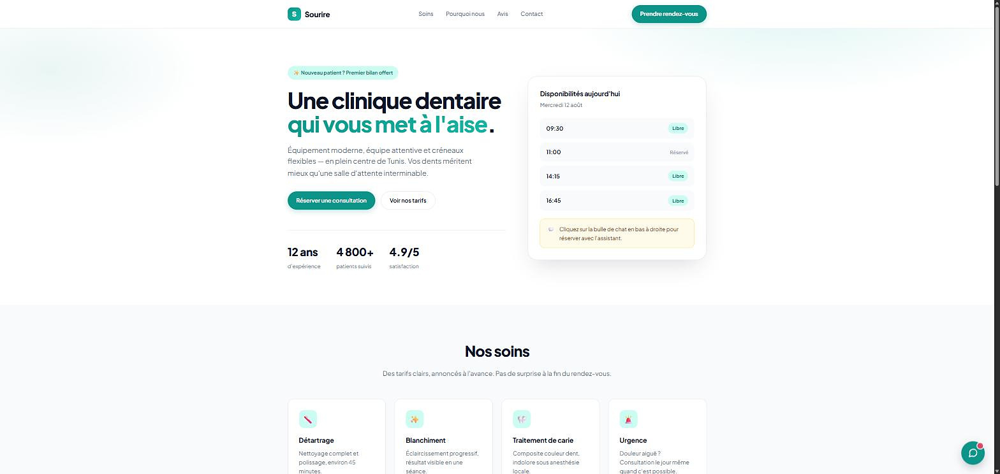
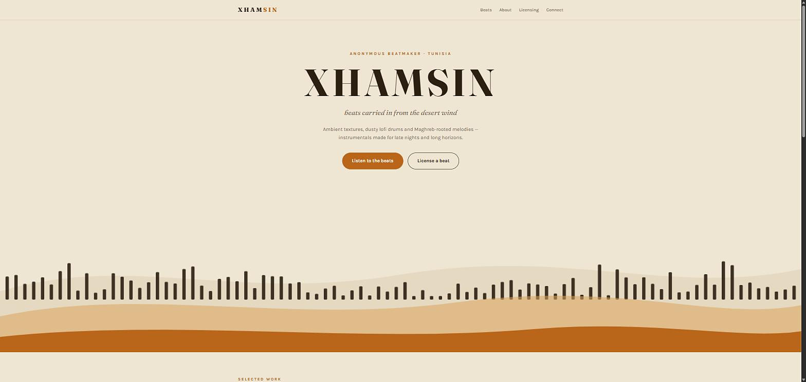

Mohamed Amine
Chamam
Ingénieur logiciel — développement front-end, machine learning et cybersécurité.
Je construis des pipelines ML reproductibles, des systèmes de détection d'anomalies et des sites web soignés de bout en bout. De l'analyse de données à l'interface finale, en passant par l'identité de marque.
Qui je suis
Un profil hybride : rigueur de la recherche appliquée, exécution d'un développeur produit.
Diplômé en ingénierie logicielle à MedTech (South Mediterranean University, Tunis), je me suis spécialisé dans le machine learning appliqué — forecasting de séries temporelles et sécurité réseau. Mon projet de fin d'études, défendu avec la mention Outstanding, a donné lieu à un article scientifique aujourd'hui en review pour une conférence IEEE.
Mais je ne me limite pas au modèle. Je conçois et développe des sites web complets — architecture, interface, animation, contenu — et je pilote un projet créatif indépendant de bout en bout : identité visuelle, production musicale, distribution et licensing.
C'est cette polyvalence que je mets au service de mes clients : je peux prendre un besoin flou, le structurer en problème technique, le résoudre, puis le présenter dans une interface que les gens ont envie d'utiliser.
Projets sélectionnés
Cliquez sur un projet pour ouvrir le détail complet.
Sourire — assistant de prise de rendez-vous
Widget de chat embarquable qui répond aux questions des patients et réserve un créneau, posé sur un site de clinique dentaire conçu comme vitrine de démonstration.

XHAMSIN
Projet musical indépendant (ambient / lofi / fusion maghrébine) et son site de marque, conçus et développés de zéro.

OCC-NIDS Benchmark
Benchmark contrôlé et sans fuite de données de six détecteurs d'anomalies one-class sur UNSW-NB15 et CIC-IDS-2018. Deux modèles (Autoencoder, Deep SVDD) implémentés from scratch en NumPy/PyTorch.
Site du benchmark OCC-NIDS
Data storytelling scientifique : mise en page de résultats, animations au scroll, structure éditoriale — entièrement codé à la main.
Prévision de consommation d'eau
Modèles de séries temporelles pour anticiper la consommation client chez Be Wireless Solutions. ARIMA/SARIMA vs LSTM.
Générateur de présentations
Génération automatisée de decks avec pptxgenjs — outillage web appliqué à des besoins concrets de production de contenu.
Stack & compétences
Les outils que j'utilise réellement en production, pas une liste de mots-clés.
◆Machine Learning
PyTorch, NumPy, scikit-learn, pandas. Détection d'anomalies, classification one-class, évaluation rigoureuse de modèles, calibration de seuils (Youden's J), reproductibilité et protocoles sans fuite de données.
▨Data Engineering
Préprocessing de larges jeux de données, cache Parquet, acquisition via AWS CLI, pipelines d'évaluation reproductibles et pistes d'audit propres.
◈Logiciel & Web
Python, JavaScript (Node.js, front-end), HTML/CSS, Git, LaTeX, environnements Linux et Windows.
◐Langues
✦Certifications
- AWS Academy Graduate — Cloud Web Application Builder (2025)
- Dynamic Programming & Greedy Algorithms — CU Boulder
- React Basics & React Native — Meta
Travaillons ensemble
Disponible pour des missions freelance en machine learning, analyse de données, cybersécurité et développement web. Décrivez-moi votre besoin — je réponds sous 24 h.